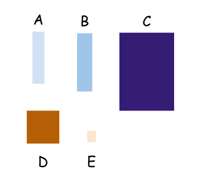

Imagine a set of 2D rectangles of different sizes; let's assume for the sake of simplicity that no two rectangles in this set have exactly the same size. Here is a sample set:
We'll say that box X fits inside box Y if we could physically enclose X inside Y; in other words, if Y's dimensions are larger than X's. In this example:
- Box A can fit inside box B, but not the other way around
- E can fit inside all other boxes, but no other box can fit inside it
- A, B, D, E can fit inside C, which itself cannot fit in any of the other boxes
- D cannot fit inside A or B; neither can A or B fit inside D
As we're going to see soon, in this case "fits" is a partial order on a set of 2D rectangular boxes, because even though we can order some of the boxes relative to each other, some other pairs of boxes have no relative order among themselves (for example A and D).
If all pairs of boxes in this set had relative ordering - for example, consider the set without box D - we could define a total order on the set. Another example for this is a set of 2D squares (rather than rectangles); as long as all the squares in the set have unique sizes [1], we can always define a total order on them because for any pair of squares either the first can fit in the second, or vice versa.
Mathematical definition of relations
To develop a mathematically sound approach to ordering, we'll have to dip our feet into set theory and relations. We'll only be talking about binary relations here.
Given a set A, a relation on A is a set of pairs with elements taken from A. A bit more rigorously, given that is the set containing all possible ordered pairs taken from A (a.k.a. the Cartesian product of A), then R is a relation on A if it's a subset of , or .
For example, given the set , then:
Note that we explicitly defined the pairs to be ordered, meaning that (1,2) and (2,1) are two distinct elements in this set.
By definition, any subset of is a relation on A. For example . In programming, we often use the term predicate to express a similar idea. A predicate is a function with a binary outcome, and the correspondence to relations is trivial - we just say that all pairs belonging to the relation satisfy the predicate, and vice versa. If we defined a predicate R(x,y) to be true if and only if x==y, we'd get the relation above.
A shortcut notation that will make definitions cleaner: we say when . In our example set 1R1, 2R2 and 3R3. This notation is a bit awkward, but it's the accepted standard in math; therefore I'm using it for consistency with other sources.
Besides, it becomes nicer when R is an operator. If we redefine R as ==, it becomes more natural: 1==1, 2==2, 3==3. The equality relation is a perfectly valid relation on a set - its elements are all the pairs where both members are the same value.
Properties of relations
There are a number of useful properties relations could have. Here are just a few that we'll need for the rest of the article; for a longer list, see the Wikipedia page.
Reflexive: every element in the set is related to itself, or . The == relation shown above is reflexive.
Irreflexive: no element in the set is related to itself, or . For example if we define the < less than relation on numbers, it's irreflexive since no number is less than itself. In our boxes example, the "fits in" relation is irreflexive because no box can fit inside itself.
Transitive: intuitively, "if x fits inside y, and y fits inside z, then x fits inside z". Mathematically . The < relation on numbers is obviously transitive.
Symmetric: if x is related to y, then y is related to x. This might sound obvious with the colloquial meaning of "related", but not in the mathematical sense. Most relations we deal with aren't symmetric. The definition is . For example, the relation == is symmetric, but < is not symmetric.
Antisymmetric: if x is related to y, then y is not related to x unless x and y are the same element; mathematically . For example, the relation (less than or equal) is antisymmetric; if and also then it must be that x and y are the same number. The relation < is also antisymmetric, though in the empty sense because we won't be able to find any pair x and y to satisfy the left side of the definition; in logic this is called vacuously.
Partial order
There are two kinds of partial orders we can define - weak and strong. The weak partial order is the more common one, so let's start with that. Whenever I'm saying just "partial order", I'll mean a weak partial order.
A weak partial order (a.k.a. non-strict) is a relation on a set A that is reflexive, transitive and antisymmetric. The relation on numbers is a classical example:
- It is reflexive because for any number x we have
- It is transitive because given and , we know that
- It is antisymmetric because given and , we know that x and y are the same number
A strong partial order (a.k.a. strict) is a relation on a set A that is irreflexive, transitive and antisymmetric. The difference between weak and strong partial orders is reflexivity. In weak partial orders, every element is related to itself; in strong partial orders, no element is related to itself. The operator < on numbers is an example of strict partial order, since it satisfies all the properties; while is reflexive, < is irreflexive.
Our rectangular boxes with the "fits" relation is a good example to distinguish between the two. We can only define a strong partial order on them, because a box cannot fit inside itself.
Another good example is a morning dressing routine. The set of clothes to wear is {underwear, pants, jacket, shirt, left sock, right sock, left shoe, right shoe}, and the relation is "has to be worn before". The following drawing encodes the relation:
This kind of drawing is called a Hasse diagram, which is useful to graphically represent partially ordered sets [2]; the arrow represents the relation. For example, the arrow from "pants" to "left shoe" encodes that pants have to be worn before the left shoe.
Note that this relation is irreflexive, because it's meaningless to say that "pants have to be worn before wearing pants". Therefore, the relation defines a strong partial order on the set.
Similarly to the rectangular boxes example, the partial order here lets us order only some of the elements in the set w.r.t. each other. Some elements like socks and a shirt don't have an order defined.
Total order
A total order is a partial order that has one additional property - any two elements in the set should be related. Mathematically:
While a partial order lets us order some elements in a set w.r.t. each other, total order requires us to be able to order all elements in a set. In the boxes example, we can't define a total order for rectangular boxes (there is not "fits in" relation between boxes A and D, no matter which way we try). We can define a total order between square boxes, however, as long as their sizes are unique.
Neither can we define a total order for the dressing diagram shown above, because we can't say either "left socks have to be worn before shirts" or "shirts have to be worn before left socks".
Examples from programming
Partial and total orders frequently come up in programming, especially when thinking about sorts. Sorting an array usually implies finding some total order on its elements. Tie breaking is important, but not always possible. If there is no way to tell two elements apart, we cannot mathematically come up with a total order, but we can still sort (and we do have a weak partial order). This is where the distinction between regular and stable sorts comes in.
Sometimes we're sorting non-linear structures, like dependency graphs in the dressing example from above. In these cases a total order is impossible, but we do have a partial order which can be useful to find a "valid" dressing order - a linear sequence of dressing steps that wouldn't violate any constraints. This can be done with topological sorting which finds a valid "linearization" of the dependency graph.
| [1] | You may notice that saying "unique" when talking about sets can sound superfluous; after all, sets are defined to have distinct elements. That said, it's not clear what "distinct" means. In our case, distinct can refer to the complete identities of the boxes; for example, two boxes can have the exact same dimensions but different colors - so they are not the same as far as the set is concerned. Moreover, in programming identity is further moot and can be defined for specific types in specific ways. For these reasons I'm going to call out uniqueness explicitly to avoid confusion. |
| [2] | A partially ordered set with R (or poset with R) is a set with a relation R that is a partial order on it. |